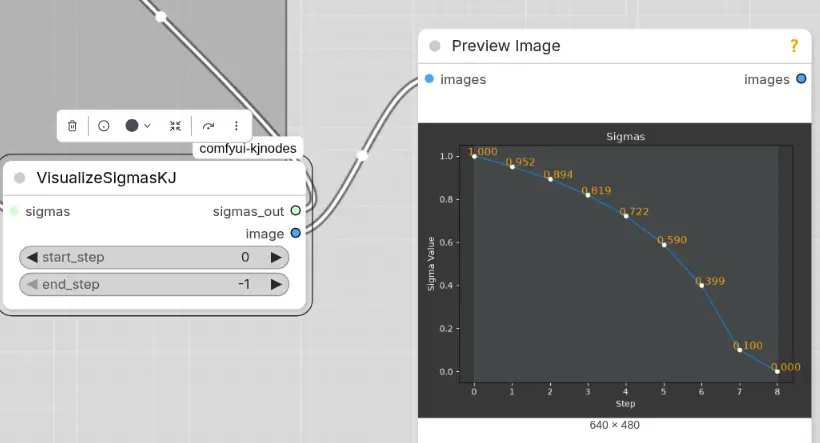
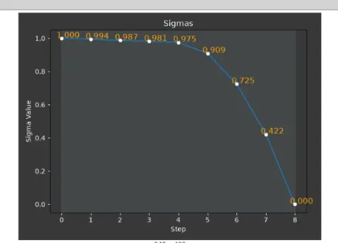

Workflow uses the baic t2v workflow in ex-t2v
Using VisualizeSigmasKJ we can see how sigmas change in each step.
Here’s the result of the official LTXVScheduler with recommended adjustment of distill 1.1

Some YTR (eg 黑鹤) uses BasicScheduler(linear_quadratic)
1.0, 0.994, 0.987, 0.981, 0975, 0.909, 0.725, 0.422, 0

Some YTR use ManualSigmas as following
1.0, 0.99375, 0.9875, 0.98125, 0.975, 0.909375, 0.725, 0.421875, 0.0
ManualSigmas settings is actually the same curve as linear_quadratic.